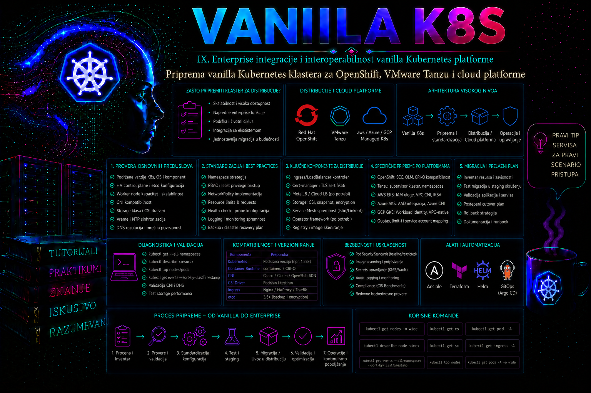

Vanilla Kubernetes

Vanilla Kubernetes klaster je pogodno mesto za učenje standardnih Kubernetes objekata i izgradnju prenosivih operativnih postupaka, ali sama činjenica da aplikacija radi u takvom klasteru ne znači da je spremna za Red Hat OpenShift, VMware Tanzu Kubernetes Grid ili upravljane cloud servise kao što su Amazon EKS, Azure Kubernetes Service i Google Kubernetes Engine. Ciljna platforma može koristiti drugačiji operativni sistem čvorova, container runtime, CNI i CSI implementaciju, model identiteta, admission kontrole, bezbednosne politike, load balancer integraciju i automatizovani životni ciklus klastera.
Priprema zato nije pokušaj da se postojeći vanilla klaster „pretvori” u OpenShift, Tanzu ili cloud servis. OpenShift se instalira kao zasebna platforma sa sopstvenim installerom, Red Hat Enterprise Linux CoreOS čvorovima, operatorima i kontrolisanim životnim ciklusom. Tanzu zahteva da se navede tačan proizvod i model implementacije, jer naziv obuhvata različite generacije i načine upravljanja klasterima. Kod upravljanih cloud servisa provajder upravlja delom kontrolne ravni, ali korisnik i dalje projektuje mreže, identitete, node pool-ove, skladište, dodatke, politiku nadogradnje i integracije. Vanilla okruženje prvenstveno služi za standardizovanje aplikacija, manifesta, bezbednosnih pravila, observability-ja, GitOps procesa i administratorskih provera pre prelaska na ciljnu platformu.
Šta u praksi znači spremnost za drugu Kubernetes platformu
Spremnost postoji kada je poznato koji delovi rešenja koriste standardni Kubernetes API, a koji zavise od konkretne infrastrukture ili proizvoda. Deployment, StatefulSet, Service, ConfigMap, Secret, Job, CronJob, probes, requests, limits i PodDisruptionBudget uglavnom imaju prenosivu osnovu. StorageClass, IngressClass, LoadBalancer servis, identity integracija, persistent volume parametri, GPU resursi, node labels, admission politike, monitoring operatori i backup integracije često su platformski specifični.
Administrator zato prvo razdvaja tri nivoa. Prvi nivo je aplikacioni manifest koji treba da ostane što bliži upstream Kubernetes API-ju. Drugi nivo čine platformski dodaci, na primer OpenShift Route, Tanzu Package Repository ili cloud controller integracija. Treći nivo je infrastruktura: DNS, IP opsezi, firewall, load balancer, registri, sertifikati, IAM, vSphere resursi, cloud VPC ili virtual network, CSI skladište i backup lokacija.
Nije cilj ukloniti sve platformske funkcije. OpenShift Route, cloud workload identity ili integracija Tanzu klastera sa vSphere skladištem mogu biti najbolja produkciona rešenja. Cilj je da zavisnost bude svesna, dokumentovana i izolovana u posebnom overlay-u, Helm values fajlu ili GitOps direktorijumu, umesto da bude neprimetno ugrađena u osnovni manifest.
| Sloj ugovora | Poželjna zajednička osnova | Tipičan platformski dodatak | Dokaz spremnosti |
|---|---|---|---|
| Workload | Stabilni Kubernetes API-ji, probes, resursi i bezbednosni kontekst | SCC izuzetak, RuntimeClass, GPU ili operator CR | Server-side dry-run i uspešan test bez nepotrebnih privilegija |
| Ulazni saobraćaj | ClusterIP Service i imenovani port | Route, IngressClass, Gateway API implementacija ili cloud LoadBalancer | DNS, TLS, health check i dozvoljena mrežna putanja |
| Podaci | PVC zahtevi opisani kapacitetom i access mode-om | StorageClass, topology, snapshot i KMS parametri | Probni restore i merene performanse na ciljnom CSI-ju |
| Identitet | Minimalan Kubernetes ServiceAccount i RBAC | OpenShift OAuth integracija, EKS Pod Identity, Entra Workload ID ili GKE federacija | Uspešan pristup samo odobrenom API-ju bez statičkog cloud ključa |
| Operacije | GitOps izvor istine, SLI/SLO, log i backup zahtevi | Vendor operatori, cloud observability i podržani backup dodatak | Alarm, incident, restore i upgrade test sa sačuvanim dokazima |
Referentna arhitektura i početni inventar
U ovoj lekciji koristi se vanilla klaster k8s-lab01 sa tri control plane čvora cp-01, cp-02 i cp-03 i dva worker čvora worker-01 i worker-02. Klaster koristi containerd, systemd cgroup driver, CNI dodatak koji podržava NetworkPolicy i CSI dinamičko provisionovanje. Administratorska radna stanica je bastion-01, a svi fajlovi praktikuma nalaze se u direktorijumu /opt/platform-readiness.
Pre planiranja ciljne platforme dokumentuju se verzije Kubernetes komponenti, operativni sistemi i kernel čvorova, container runtime, cgroup režim, CNI, CSI driveri, StorageClass objekti, IngressClass, API ekstenzije, admission webhook-ovi, sertifikati, registry integracija, mrežni opsezi i način izlaganja servisa. Kubernetes podržava različite CRI implementacije, ali kubelet i runtime moraju imati usklađen cgroup driver. Za savremene Linux distribucije preporučeni su systemd cgroup driver i cgroup v2 kada ih podržavaju kernel, runtime i operativni sistem.
| Oblast | Šta se evidentira | Zašto utiče na migraciju |
|---|---|---|
| API i verzije | Kubernetes verzija, CRD objekti, APIService i webhook konfiguracije | Uklonjeni API-ji ili nekompatibilni operatori mogu blokirati instalaciju |
| Runtime i OS | Container runtime, cgroup, kernel, SELinux ili AppArmor | Menjaju izvršavanje kontejnera i bezbednosna ograničenja |
| Mreža | Pod, Service i node CIDR, DNS, MTU, CNI i load balancer | Preklapanje opsega i pogrešan MTU izazivaju teško uočljive prekide |
| Skladište | CSI driver, StorageClass, access mode, reclaimPolicy i snapshot podrška | PVC nije automatski prenosiv između različitih storage sistema |
| Bezbednost | RBAC, Pod Security, privilegovani podovi, hostPath i hostNetwork | Stroža ciljna platforma može odbiti postojeće workload-e |
| Operacije | Monitoring, logovi, backup, restore, GitOps i upgrade proces | Migracija bez operativnog modela samo premešta postojeći rizik |
Razlike koje utiču na administratora
OpenShift. OpenShift nije samo distribucija Kubernetes binarnih datoteka. Platforma koristi operatore za upravljanje komponentama, MachineConfig za kontrolisane promene čvorova, integrisani image registry kao opcionu komponentu, OAuth integraciju, Routes, Security Context Constraints i podrazumevano restriktivniji bezbednosni model. Produkciona aplikacija ne treba da zahteva root korisnika, privilegovani režim, zapisivanje u sistemske direktorijume slike ili proizvoljan hostPath. Slika treba da radi sa numeričkim non-root identitetom i, kada je potrebno, sa proizvoljnim UID-om koji platforma dodeli iz namespace opsega.
Na novim OpenShift instalacijama od verzije 4.11 podrazumevana SCC osnova za standardne workload-e je restricted-v2, dok stariji restricted može ostati dostupan u nadograđenim klasterima ili biti eksplicitno dodeljen. To je važna verzijska razlika: činjenica da workload prolazi u istorijski nadograđenom klasteru ne dokazuje da će proći na čistoj novoj instalaciji. Administrator proverava koja je SCC stvarno primenjena na pod, ali ne dodeljuje širu SCC samo da bi izbegao ispravku slike ili manifesta. Pod Security Admission sinhronizacija i SCC prijem su povezane kontrole, ali nisu isti mehanizam.
OpenShift instalacioni model zavisi od podržane infrastrukture. Kod user-provisioned bare-metal implementacije administrator obezbeđuje mašine, mrežu, DNS, load balancing i druge preduslove, dok se čvorovi pokreću pomoću generisanih RHCOS Ignition konfiguracija. Veći deo mrežnog dizajna mora biti pravilno definisan pre instalacije, jer naknadna promena Pod i Service opsega, MTU-a ili ključnih infrastrukturnih parametara može biti složena ili nepodržana. RHCOS čvorovi se ne održavaju kao opšti Linux serveri: podržane promene OS-a i container runtime-a sprovode se deklarativno preko Machine Config Operatora, a proizvoljne ručne izmene hosta stvaraju drift i mogu biti vraćene ili dovesti klaster u degradirano stanje.
VMware Tanzu i vSphere Supervisor. Naziv Tanzu obuhvata više proizvoda i generacija, pa se u projektu mora zapisati pun naziv, izdanje, verzija i model upravljanja. Supervisor sa Kubernetes servisom na vSphere-u, standalone Tanzu Kubernetes Grid i istorijski Tanzu Kubernetes Grid Integrated Edition nisu međusobno zamenljivi. Posebno je važno da je TKG 2.5.4 označen kao poslednje enterprise izdanje standalone TKG linije; zato se nova arhitektura ne zasniva na pretpostavci o njenom neograničenom budućem razvoju, već se odluka potvrđuje sa važećom Broadcom matricom podrške i planom migracije. Za vSphere model proveravaju se kompatibilne verzije vCenter Servera i ESXi hostova, licenca i entitlement, mrežni stack, load balancer integracija, content library ili bazne slike, DNS, NTP, storage policy, resursni pool, VM klase, dostupne IP adrese i odgovarajuće vSphere privilegije.
Upravljani cloud Kubernetes. EKS, AKS i GKE uklanjaju deo posla oko kontrolne ravni, ali ne uklanjaju administratorsku odgovornost. Potrebno je projektovati privatne ili javne API endpoint-e, subnet-e i IP kapacitet, IAM ili workload identity, node pool-ove, zone dostupnosti, egress, DNS, load balancer klase, storage klase, autoscaling, politiku nadogradnje, maintenance window, troškove i podelu odgovornosti. Za pristup cloud API-jima cilj su kratkotrajni identiteti vezani za Kubernetes ServiceAccount: EKS Pod Identity ili, gde je opravdano, IRSA; Microsoft Entra Workload ID u AKS-u; i Workload Identity Federation for GKE. To nisu prenosivi Kubernetes objekti sami po sebi, pa se cloud association, IAM policy i pripadajuće anotacije ili labele drže u platformskoj konfiguraciji. Kod višekorisničkih okruženja razmatra se izolacija na nivou naloga ili projekta, klastera, namespace-a, čvora, poda i kontejnera; namespace sam po sebi nije potpuna bezbednosna granica.
Mreža, DNS i izlaganje servisa
Mreža je najčešći izvor problema koji se ne vide u razvojnom klasteru. Pre izbora ciljne platforme potvrđuje se da se Pod CIDR, Service CIDR, node mreža, VPN, data-centar i cloud VPC opsezi ne preklapaju. Plan mora obuhvatiti budući rast, više klastera, disaster recovery lokaciju i servisne integracije. Premali subnet može ograničiti broj čvorova ili podova, posebno kod cloud CNI rešenja koja podovima dodeljuju adrese iz infrastrukturne mreže.
Proveravaju se forward i reverse DNS zapisi, NTP sinhronizacija, dozvoljeni portovi, proxy i no_proxy vrednosti, MTU kroz celu putanju i egress prema registry-jima i spoljnim servisima. OpenShift i Tanzu imaju instalacione endpoint-e i infrastrukturne zahteve koji se moraju rešiti pre instalacije. U disconnected ili internet-restricted okruženju moraju postojati interni registry, verifikovano preslikane slike i release artefakti, pouzdani CA sertifikati, lokalno dostupni operatori ili paketi i kontrolisana procedura osvežavanja sadržaja. Air-gap zato nije samo firewall pravilo već zaseban model lanca snabdevanja softverom.
Osnovni aplikacioni Service treba da ostane tipa ClusterIP. Ingress, OpenShift Route ili cloud LoadBalancer dodaju se u ciljnom overlay-u. Time se sprečava da aplikacioni tim hardkoduje javne adrese, load balancer anotacije ili specifičnu IngressClass vrednost u zajednički manifest.
Skladište, podaci i backup
StorageClass ime nije ugovor koji važi na svim platformama. Klasa standard u jednom klasteru može značiti lokalni disk, u drugom vSphere datastore, a u trećem cloud block storage. Prenosiv workload zahteva funkcionalne osobine: ReadWriteOnce ili ReadWriteMany pristup, minimalni kapacitet, dozvoljeno proširenje, očekivane performanse, enkripciju, zone, snapshot mogućnost i željenu reclaimPolicy vrednost.
Za stateful aplikacije prvo se migrira podatak, zatim workload. YAML definicija PVC-a nije backup sadržaja volumena. Potrebni su application-consistent backup, baza u konzistentnom stanju, CSI snapshot samo ako je podržan i testiran, kopija izvan primarnog klastera i probni restore. etcd backup vanilla klastera može vratiti stanje tog klastera, ali se ne koristi kao metod preseljenja workload-a u OpenShift, Tanzu ili upravljani servis.
Pre promene platforme dokumentuju se RPO i RTO, vlasnik podataka, period zadržavanja, enkripcija, lokacija kopije i rezultat poslednjeg probnog restore-a. Migracija bez uspešnog restore testa nije odobrena promena, čak i kada svi manifesti prolaze validaciju.
Bezbednost, identitet i prenosivost aplikacija
Prenosiva aplikacija radi bez privileged režima, hostPID-a, hostIPC-a, hostNetwork-a i hostPath volumena, osim kada je takva zavisnost eksplicitno odobrena za infrastrukturnu komponentu. Kontejner koristi runAsNonRoot, podrazumevani seccomp profil, uklonjene Linux capabilities, read-only root filesystem gde je moguće i odvojeni writable volumen za privremene podatke. Service Account ne dobija automatski široka prava, a token se ne montira kada aplikaciji nije potreban Kubernetes API.
Pod Security Admission i OpenShift SCC nisu ista funkcija, iako obe ograničavaju podove. Manifest koji prolazi Kubernetes restricted Pod Security profil ima bolju osnovu za OpenShift, ali to nije potpuna garancija. Posebno se proveravaju eksplicitni UID i GID brojevi, fsGroup, SELinux kontekst, writable putanje i ponašanje slike kada platforma dodeli drugačiji identitet.
Cloud identitet treba odvojiti od Kubernetes RBAC-a. RBAC određuje pristup Kubernetes API-ju, dok IAM ili workload identity određuje pristup object storage-u, bazama, key vault servisima i drugim cloud resursima. Statički cloud ključevi u Secret objektima predstavljaju prelazno, a ne ciljano rešenje.
Životni ciklus, verzije i automatizacija
Administrator ne bira Kubernetes verziju izolovano. Proverava matricu podrške za operativni sistem, CNI, CSI, ingress kontroler, service mesh, backup alat, monitoring, GPU operatore i aplikacione operatore. OpenShift, Broadcom i cloud provajderi objavljuju sopstvene podržane kombinacije, kanale izdanja i redosled nadogradnje. Postupak zavisi od tačnog proizvoda: standalone TKG nadogradnja može zahtevati odgovarajuću Tanzu CLI verziju, nove bazne slike, management klaster i tek zatim workload klastere, dok Supervisor i cloud servisi imaju sopstvene kontrolere, maintenance prozore i pravila verzijskog pomeranja. Pre svake promene proveravaju se aktuelni lifecycle i upgrade-path dokumenti; stari redosled iz druge Tanzu generacije ili drugog cloud režima ne prenosi se napamet.
Manifesti se čuvaju u Git repozitorijumu i dele na zajedničku osnovu i platformske overlay-e. Izmene prolaze schema validaciju, bezbednosne provere, test u neprodukcijskom klasteru, funkcionalni test i odobrenje promene. Ručna izmena produkcionog objekta komandom kubectl edit može biti potrebna u incidentu, ali se nakon stabilizacije mora vratiti u deklarativni izvor istine.
Integrisani praktikum – procena spremnosti klastera i prenosive aplikacije
Poslovni i tehnički kontekst. Organizacija planira da aplikaciju portal-web prvo testira u vanilla klasteru k8s-lab01, a zatim implementira na OpenShift, TKG na vSphere-u i jednom upravljanom cloud Kubernetes servisu. Cilj nije izbor konačne platforme, već dokaz da zajednički manifest nema skrivene infrastrukturne i bezbednosne zavisnosti.
Referentno okruženje i prava. Administrator radi na bastion-01. Za inventar ima read-only pristup čvorovima, StorageClass, CRD, webhook i APIService objektima. Za namespace platform-readiness ima pravo kreiranja standardnih workload-a, NetworkPolicy, ResourceQuota, LimitRange, ConfigMap, Service i PodDisruptionBudget objekata. Cluster-admin se ne koristi za aplikacionu implementaciju. Interni registry već sadrži odobrenu sliku registry.lab.example/platform/portal-web:1.0.0, koja sluša na portu 8080, radi kao non-root i ne zahteva fiksni UID.
-
Priprema radnog direktorijuma i evidencije promene.
Direktorijum se pravi sa ograničenim pravima. U tekstualni zapis ulaze datum, kubeconfig context i identitet izvršioca, kako bi rezultati mogli da se povežu sa change zahtevom.
Validacija: trenutni context mora biti k8s-lab01, a fajl audit-start.txt mora sadržati vreme i identitet ili podatak da korišćena kubectl verzija ne podržava komandu auth whoami.sudo install -d -m 0750 -o "$USER" -g "$USER" /opt/platform-readiness cd /opt/platform-readiness date --iso-8601=seconds | tee audit-start.txt kubectl config current-context | tee -a audit-start.txt kubectl auth whoami 2>/dev/null | tee -a audit-start.txt || true -
Provera prava pre čitanja i promene.
Administrator najpre potvrđuje da može da čita klasterski inventar i da ne može da menja čvorove. Zatim proverava prava potrebna u ciljnom namespace-u.
Očekivani rezultat: prve dve i poslednje dve provere vraćaju yes, dok patch nodes vraća no. Ako nalog može da menja čvorove bez poslovne potrebe, praktikum se prekida i traži se korekcija ovlašćenja.kubectl auth can-i get nodes kubectl auth can-i get storageclasses.storage.k8s.io kubectl auth can-i patch nodes kubectl auth can-i create deployments.apps -n platform-readiness kubectl auth can-i create networkpolicies.networking.k8s.io -n platform-readiness -
Prikupljanje klasterskog inventara.
Komande beleže verzije, runtime, operativne sisteme, mrežne i storage ekstenzije. JSON i YAML fajlovi služe za kasnije poređenje sa ciljnom platformom.
Validacija: readyz rezultat mora imati uspešne provere bez failed oznaka, svi čvorovi moraju biti Ready, a APIService objekti čiji status nije dostupan moraju biti analizirani pre nastavka.kubectl version -o yaml > kubernetes-version.yaml kubectl get nodes -o wide > nodes-wide.txt kubectl get nodes -o json > nodes.json kubectl get storageclass -o yaml > storageclasses.yaml kubectl get ingressclass -o yaml > ingressclasses.yaml kubectl get crd -o name > crd-list.txt kubectl get apiservice -o wide > apiservices.txt kubectl get validatingwebhookconfigurations,mutatingwebhookconfigurations -o name > webhooks.txt kubectl get --raw='/readyz?verbose' > apiserver-readyz.txtkubectl get nodes grep -i failed apiserver-readyz.txt || echo "Nema neuspešnih readyz provera" kubectl get apiservice | awk 'NR==1 || $3!="True"' -
Provera runtime i cgroup podataka.
Podaci koje API izlaže porede se između svih čvorova. Mešanje različitih runtime ili značajno različitih kernel verzija nije automatski kvar, ali zahteva opravdanje i dodatno testiranje.
Validacija: očekuje se containerd na svim čvorovima i ista podržana kubelet minor verzija. Na samim čvorovima ovlašćeni sistem administrator dodatno proverava stat -fc %T /sys/fs/cgroup i konfiguraciju runtime-a. Pristup čvorovima nije deo aplikacionih prava i ne sme se zaobilaziti privilegovanim podom.kubectl get nodes -o custom-columns='NAME:.metadata.name,OS:.status.nodeInfo.osImage,KERNEL:.status.nodeInfo.kernelVersion,RUNTIME:.status.nodeInfo.containerRuntimeVersion,KUBELET:.status.nodeInfo.kubeletVersion' -
Kreiranje namespace zaštitnih granica.
Namespace dobija Pod Security oznake, ResourceQuota i LimitRange. U postojećem namespace-u produkciona migracija se izvodi etapno: najpre
warniaudit, zatim uklanjanje neusaglašenosti, pa tek ondaenforce. Laboratorijska slika je unapred proverena, zato vežba odmah uključuje sva tri režima. Ako se oznake*-versionizostave, primenjuje se najnoviji profil poznat API serveru; u produkciji se profil često vezuje za testiranu Kubernetes minor verziju i planski pomera tokom nadogradnje kako nova pravila ne bi neočekivano blokirala workload.
Validacija: namespace mora imati tri Pod Security oznake, a quota i LimitRange moraju biti aktivni.cat > namespace-controls.yaml <<'EOF' apiVersion: v1 kind: Namespace metadata: name: platform-readiness labels: pod-security.kubernetes.io/enforce: restricted pod-security.kubernetes.io/audit: restricted pod-security.kubernetes.io/warn: restricted --- apiVersion: v1 kind: ResourceQuota metadata: name: platform-readiness-quota namespace: platform-readiness spec: hard: requests.cpu: "2" requests.memory: 2Gi limits.cpu: "4" limits.memory: 4Gi pods: "10" --- apiVersion: v1 kind: LimitRange metadata: name: container-defaults namespace: platform-readiness spec: limits: - type: Container defaultRequest: cpu: 100m memory: 128Mi default: cpu: 500m memory: 512Mi EOF kubectl apply --server-side -f namespace-controls.yamlkubectl get namespace platform-readiness --show-labels kubectl get resourcequota,limitrange -n platform-readiness kubectl describe resourcequota platform-readiness-quota -n platform-readiness -
Negativni bezbednosni test.
Namerno se pokušava kreiranje privilegovanog poda. Očekivano odbijanje dokazuje da admission kontrola radi. Test ne pokreće privilegovani kontejner jer API zahtev mora biti odbijen pre zakazivanja.
Očekivani rezultat: API server vraća Forbidden i navodi kršenje restricted politike. Ako se pod kreira, implementacija se zaustavlja jer namespace zaštita nije pravilno primenjena.cat > negative-privileged-pod.yaml <<'EOF' apiVersion: v1 kind: Pod metadata: name: forbidden-privileged namespace: platform-readiness spec: containers: - name: test image: registry.lab.example/platform/portal-web:1.0.0 securityContext: privileged: true EOF kubectl apply -f negative-privileged-pod.yamlkubectl get pod forbidden-privileged -n platform-readiness 2>/dev/null || echo "Negativni test je uspešno odbijen" -
Definisanje prenosive aplikacije.
Manifest koristi ClusterIP Service, ne zahteva fiksan UID, zabranjuje privilege escalation, uklanja capabilities, koristi RuntimeDefault seccomp, ima probes, requests i limits, PDB i topology spread. Writable prostor obezbeđuje emptyDir umesto zapisivanja u image filesystem.
Validacija: rollout mora biti uspešan, oba poda Ready, Service mora imati endpoint-e, a PDB najmanje jednu dozvoljenu zdravu instancu.cat > portal-web.yaml <<'EOF' apiVersion: v1 kind: ConfigMap metadata: name: portal-web-config namespace: platform-readiness data: PLATFORM_MODE: portable --- apiVersion: apps/v1 kind: Deployment metadata: name: portal-web namespace: platform-readiness labels: app.kubernetes.io/name: portal-web app.kubernetes.io/version: "1.0.0" spec: replicas: 2 selector: matchLabels: app.kubernetes.io/name: portal-web template: metadata: labels: app.kubernetes.io/name: portal-web spec: automountServiceAccountToken: false securityContext: seccompProfile: type: RuntimeDefault topologySpreadConstraints: - maxSkew: 1 topologyKey: kubernetes.io/hostname whenUnsatisfiable: ScheduleAnyway labelSelector: matchLabels: app.kubernetes.io/name: portal-web containers: - name: web image: registry.lab.example/platform/portal-web:1.0.0 imagePullPolicy: IfNotPresent ports: - name: http containerPort: 8080 envFrom: - configMapRef: name: portal-web-config securityContext: allowPrivilegeEscalation: false runAsNonRoot: true readOnlyRootFilesystem: true capabilities: drop: - ALL resources: requests: cpu: 100m memory: 128Mi limits: cpu: 500m memory: 512Mi startupProbe: httpGet: path: /healthz port: http failureThreshold: 30 periodSeconds: 2 readinessProbe: httpGet: path: /readyz port: http periodSeconds: 10 livenessProbe: httpGet: path: /healthz port: http periodSeconds: 20 volumeMounts: - name: runtime mountPath: /tmp volumes: - name: runtime emptyDir: sizeLimit: 128Mi --- apiVersion: v1 kind: Service metadata: name: portal-web namespace: platform-readiness spec: type: ClusterIP selector: app.kubernetes.io/name: portal-web ports: - name: http port: 80 targetPort: http --- apiVersion: policy/v1 kind: PodDisruptionBudget metadata: name: portal-web namespace: platform-readiness spec: minAvailable: 1 selector: matchLabels: app.kubernetes.io/name: portal-web EOF kubectl apply --dry-run=server -f portal-web.yaml kubectl apply --server-side -f portal-web.yamlkubectl rollout status deployment/portal-web -n platform-readiness --timeout=180s kubectl get deployment,pod,service,endpointslice,pdb -n platform-readiness -o wide kubectl describe deployment portal-web -n platform-readiness -
Uvođenje podrazumevane mrežne zabrane i eksplicitnog pristupa.
Prva politika blokira sav ingress i egress. Druga dozvoljava pristup aplikaciji samo podovima označenim sa access=portal-web i DNS saobraćaj ka kube-system namespace-u.
Validacija: sve tri politike moraju postojati. NetworkPolicy pravila su aditivna:cat > network-policies.yaml <<'EOF' apiVersion: networking.k8s.io/v1 kind: NetworkPolicy metadata: name: default-deny namespace: platform-readiness spec: podSelector: {} policyTypes: - Ingress - Egress --- apiVersion: networking.k8s.io/v1 kind: NetworkPolicy metadata: name: allow-portal-ingress-and-dns namespace: platform-readiness spec: podSelector: matchLabels: app.kubernetes.io/name: portal-web policyTypes: - Ingress - Egress ingress: - from: - podSelector: matchLabels: access: portal-web ports: - protocol: TCP port: 8080 egress: - to: - namespaceSelector: matchLabels: kubernetes.io/metadata.name: kube-system ports: - protocol: UDP port: 53 - protocol: TCP port: 53 --- apiVersion: networking.k8s.io/v1 kind: NetworkPolicy metadata: name: allow-authorized-client-egress namespace: platform-readiness spec: podSelector: matchLabels: access: portal-web policyTypes: - Egress egress: - to: - podSelector: matchLabels: app.kubernetes.io/name: portal-web ports: - protocol: TCP port: 8080 - to: - namespaceSelector: matchLabels: kubernetes.io/metadata.name: kube-system ports: - protocol: UDP port: 53 - protocol: TCP port: 53 EOF kubectl apply --dry-run=server -f network-policies.yaml kubectl apply -f network-policies.yaml kubectl get networkpolicy -n platform-readinessdefault-denyizoluje podove, ingress pravilo dopušta samo označenom klijentu da dođe do aplikacije, a posebno egress pravilo tom klijentu dopušta DNS i odredišni port aplikacije. Efekat se očekuje samo ako CNI implementacija sprovodi NetworkPolicy; prisustvo API objekta samo po sebi nije dokaz da je filtriranje aktivno. U nekim implementacijama DNS radi u posebnom namespace-u ili preko node-local DNS adrese, pa se odredište usklađuje sa stvarnom topologijom, ne proširuje nasumično na sav egress. -
Funkcionalni i negativni mrežni test.
Dozvoljeni klijent dobija oznaku
access=portal-webi mora dobiti HTTP odgovor. Neoznačeni klijent mora imati timeout. Test slika mora biti unapred odobrena u internom registry-ju, raditi kao non-root i sadržaticurl. Bezbednosni kontekst je naveden eksplicitno da bi i testni podovi prošlirestrictedprofil.
Očekivani rezultat: prvicat > client-tests.yaml <<'EOF' apiVersion: v1 kind: Pod metadata: name: allowed-client namespace: platform-readiness labels: access: portal-web spec: automountServiceAccountToken: false restartPolicy: Never securityContext: seccompProfile: type: RuntimeDefault containers: - name: curl image: registry.lab.example/platform/curl:8.10.1 command: ["sleep", "600"] securityContext: allowPrivilegeEscalation: false runAsNonRoot: true capabilities: drop: ["ALL"] --- apiVersion: v1 kind: Pod metadata: name: denied-client namespace: platform-readiness spec: automountServiceAccountToken: false restartPolicy: Never securityContext: seccompProfile: type: RuntimeDefault containers: - name: curl image: registry.lab.example/platform/curl:8.10.1 command: ["sleep", "600"] securityContext: allowPrivilegeEscalation: false runAsNonRoot: true capabilities: drop: ["ALL"] EOF kubectl apply -f client-tests.yaml kubectl wait --for=condition=Ready pod/allowed-client pod/denied-client \ -n platform-readiness --timeout=120s kubectl exec -n platform-readiness allowed-client -- \ curl --fail --max-time 5 http://portal-web/readyz kubectl exec -n platform-readiness denied-client -- \ curl --fail --max-time 5 http://portal-web/readyzcurlvraća uspešan odgovor, a drugi završava timeout-om i nenultim izlaznim kodom.Connection refusedukazuje da je mrežna putanja dozvoljena, ali aplikacija ne sluša ili Service nema odgovarajući endpoint; timeout je očekivan simptom filtriranja. Negativni test se ne izvršava sa|| true, jer bi to sakrilo neočekivan uspeh; rezultat i izlazni kod beleže se kao dokaz. -
Pregled događaja i logova.
Kubernetes događaji otkrivaju admission odbijanja, scheduling, image pull i probe probleme. Container logovi pokazuju aplikacione greške, dok se kubelet i containerd sistemski logovi čitaju na konkretnom čvoru samo kroz odobreni administratorski pristup.
kubectl get events -n platform-readiness --sort-by=.metadata.creationTimestamp kubectl logs -n platform-readiness deployment/portal-web --all-pods=true --tail=100 kubectl describe pod -n platform-readiness -l app.kubernetes.io/name=portal-webRelevantne lokacije: aplikacioni stdout i stderr čitaju se komandom kubectl logs i centralnim log sistemom; kubelet logovi se na systemd čvoru proveravaju komandom journalctl -u kubelet; containerd logovi komandom journalctl -u containerd; API audit log se proverava na lokaciji koju definiše administrativna konfiguracija platforme. Na OpenShift-u se stanje operatora i čvorova prvenstveno proverava podržanim oc komandama i platformskim observability alatima, a ne proizvoljnim ručnim izmenama hosta.
-
Dokumentovanje platformskih odstupanja.
Za svaku ciljnu platformu pravi se matrica u kojoj se navodi zamena za Ingress, StorageClass, identity, load balancer, registry i monitoring. Osnovni portal-web.yaml ostaje bez platformske anotacije.
Kriterijum: nijedna otvorena stavka ne sme biti sakrivena u aplikacionom manifestu ili prepuštena pretpostavci aplikacionog tima.cat > platform-delta.txt <<'EOF' OpenShift: - proveriti SCC prijem manifesta i podršku slike za proizvoljan UID - definisati Route ili odobrenu IngressClass - mapirati PVC zahteve na odobrenu StorageClass - koristiti OpenShift OAuth i operator model gde je primenljivo Tanzu: - navesti pun naziv proizvoda, izdanje i lifecycle status - potvrditi Supervisor ili postojeći standalone management model - potvrditi vSphere storage policy, bazne slike, mreže i IP kapacitet - definisati podržani ingress i load balancer dodatak - proveriti compatibility i upgrade matricu Cloud: - izabrati EKS, AKS ili GKE režim i politiku verzija - mapirati workload identity, CSI, ingress i LoadBalancer anotacije - potvrditi zone, subnet IP kapacitet, privatni endpoint i egress - uključiti cloud logging, monitoring, backup i cost tagging EOF cat platform-delta.txt -
Rollback i cleanup.
Ako je test deo privremene procene, namespace se uklanja tek nakon čuvanja inventara, događaja i rezultata testa u odobrenom repozitorijumu dokaza.
Upozorenje: brisanje namespace-a uklanja sve namespaced objekte i eventualne podatke koji nisu sačuvani. U ovom praktikumu nema trajnih poslovnih podataka, ali administrator mora potvrditi sadržaj pre komande.
Bezbednija alternativa: kada rezultate treba zadržati radi dalje analize, ne briše se namespace; Deployment se skalira na nulu i u change zapisu se navodi datum ponovne procene.kubectl get all,configmap,networkpolicy,resourcequota,limitrange,pdb \ -n platform-readiness -o yaml > final-namespace-state.yaml kubectl delete namespace platform-readiness kubectl wait --for=delete namespace/platform-readiness --timeout=180s
Kriterijumi prihvatanja
- Svi čvorovi imaju Ready status, a API server readyz provera nema neuspešne stavke.
- Inventar sadrži Kubernetes verzije, OS, kernel, runtime, StorageClass, IngressClass, CRD, APIService i webhook objekte.
- Nalog za procenu može da čita potreban inventar, ali ne može da menja čvorove.
- Privilegovani testni pod je odbijen restricted politikom pre zakazivanja.
- portal-web ima dve Ready replike, dostupne endpoint-e i uspešne startup, readiness i liveness provere.
- Aplikacija radi bez root zahteva, privilege escalation-a, hostPath-a, hostNetwork-a i automatskog Service Account tokena.
- Dozvoljeni klijent pristupa servisu, dok neoznačeni klijent ima timeout zbog NetworkPolicy pravila.
- Platform-specific razlike evidentirane su odvojeno za OpenShift, Tanzu i izabrani cloud servis.
- Za stateful workload-e postoji dokumentovan i uspešno testiran postupak backup-a i restore-a pre migracije.
Tipične greške i njihovo razlikovanje
Manifest prolazi u vanilla klasteru, ali je odbijen na OpenShift-u. Najčešći uzrok su root korisnik, fiksni UID van dozvoljenog opsega, writable root filesystem, nedozvoljena capability ili host pristup. Admission poruka i događaji razlikuju bezbednosno odbijanje od image pull ili runtime greške.
Pod je Running, ali servis nije dostupan. Prvo se proveravaju readiness, Service selector i EndpointSlice. Ako endpoint ne postoji, uzrok je selector ili readiness. Ako endpoint postoji, ali pristup timeout-uje, proveravaju se NetworkPolicy, CNI, firewall i ruta. Connection refused obično znači da je paket stigao do odredišta, ali proces ne sluša na očekivanom portu.
PVC ostaje Pending. Proveravaju se StorageClass ime, default klasa, CSI controller podovi, access mode, zone i događaji PVC-a. Problem se ne rešava nasumičnom promenom imena klase; najpre se potvrđuje da ciljna klasa pruža potrebne osobine.
Cloud ili vSphere klaster nema dovoljno adresa. Simptomi mogu biti neuspešno kreiranje čvora, podovi bez mreže ili load balancer u Pending stanju. Proveravaju se subnet kapacitet, IP pool, DHCP ili statički raspon, rezervacije i preklapanje mreža. Dodavanje još CPU-a ne rešava nedostatak IP adresa.
CRD postoji, ali kontroler ne radi. Sam CRD samo registruje API tip. Proveravaju se operator ili controller Deployment, leader election, RBAC, webhook sertifikati i kompatibilnost verzije. Migracija CRD objekata bez odgovarajućeg kontrolera ostavlja nefunkcionalne deklaracije.
Administratorske prakse
Inventar i verzijska usklađenost. Jednom mesečno i pre svake nadogradnje izvršavaju se kubectl version, pregled nodeInfo, CRD, APIService, webhook, CNI i CSI komponenti. Reakciju zahtevaju različite nepodržane kubelet minor verzije, nedostupan APIService, webhook bez aktivnog backend-a ili komponenta van vendor matrice podrške. Prva reakcija je zaustavljanje promene i otvaranje tehničke analize. Rezultati se čuvaju u CMDB-u i Git repozitorijumu platforme. Uspeh se meri odsustvom nedokumentovanih komponenti i završenom proverom podrške pre change termina.
Kapacitet mreže. Nedeljno se prate slobodne node, Pod, Service i load balancer adrese, a obavezno nakon dodavanja node pool-a, namespace-a većeg obima ili novog klastera. Reakciju zahteva iskorišćenost iznad internog praga, tipično 70–80%, ili projekcija koja pokazuje da nema kapaciteta za planirani rast i rolling upgrade. Prva reakcija je provera stvarne potrošnje i rezervacija, zatim proširenje opsega podržanim postupkom ili projektovanje novog klastera. Dokumentuju se CIDR, vlasnik, rezervacije i prognoza rasta.
Bezbednosna usklađenost workload-a. Svaka izmena manifesta prolazi server-side dry-run, Pod Security proveru i test bez privilegija. Pojava hostPath-a, hostNetwork-a, privileged režima, dodate capability ili automatskog tokena bez opravdanja zahteva odbijanje merge zahteva. Prva reakcija je dogovor sa vlasnikom aplikacije o najmanjoj potrebnoj privilegiji. Izuzetak se dokumentuje u risk registru sa rokom važenja i kompenzacionim kontrolama. Uspeh se meri procentom workload-a koji prolaze restricted profil bez izuzetka.
Backup i restore. Čuvaju se deklarativni manifesti, Git istorija, podaci stateful aplikacija, potrebne tajne u odobrenom secrets sistemu, PKI materijal prema bezbednosnoj proceduri i platformski backup koji podržava proizvođač. Git se replicira kontinuirano, poslovni podaci prema RPO-u, a klasterski backup prema kritičnosti platforme. Kopija se čuva van primarnog klastera i druge administratorske granice. Integritet se proverava checksum-om, izveštajem backup alata i periodičnim restore-om u izolovanom okruženju. Uspeh potvrđuju pokrenuta aplikacija, čitljivi podaci, zadovoljen RPO i restore unutar RTO-a.
Test nadogradnje. Pre produkcione nadogradnje proveravaju se release notes, uklonjeni API-ji, operatori, CNI, CSI, ingress, backup i observability integracije. Prva reakcija na nekompatibilnost je odlaganje promene, a ne prisilna nadogradnja. Rezultat testa, rollback tačka, trajanje i uočene degradacije dokumentuju se u change sistemu. Uspeh se meri završetkom nadogradnje bez gubitka dostupnosti iznad dogovorenog praga i bez ručnih nedokumentovanih intervencija.
Završna kontrolna tačka
Lekcija je završena kada administrator može samostalno da razdvoji zajednički Kubernetes ugovor od platformske implementacije, prikupi ponovljiv inventar bez nepotrebnih privilegija, objasni rizik svake uočene zavisnosti i priloži sledeće proverljive dokaze:
- Potvrđen je kubeconfig context k8s-lab01 i evidentiran identitet izvršioca.
- Komanda kubectl auth can-i potvrđuje samo potrebna read i namespaced prava; patch nodes vraća no.
- Kubectl readyz provera nema failed stavke, a svi čvorovi imaju Ready status.
- Evidentirani su runtime, cgroup režim, kernel, CNI, CSI, StorageClass, IngressClass, CRD i webhook objekti.
- Pod, Service, node, VPN, data-centar i cloud mrežni opsezi provereni su na preklapanje.
- Potvrđeni su DNS, NTP, MTU, firewall, proxy, registry i CA preduslovi ciljne platforme.
- Testni workload prolazi restricted bezbednosni profil bez privileged, hostPath i hostNetwork zahteva.
- Deployment ima uspešan rollout, dve Ready replike, funkcionalne probes i aktivne EndpointSlice objekte.
- NetworkPolicy pozitivni test vraća HTTP uspeh, a negativni test završava timeout-om.
- Storage zahtevi opisani su osobinama, a ne samo imenom postojeće StorageClass klase.
- Backup je sačuvan izvan primarnog klastera i probni restore zadovoljava RPO i RTO.
- OpenShift, Tanzu i cloud odstupanja nalaze se u odvojenim overlay-ima ili dokumentovanoj matrici.
- Rezultati procene, rizici, izuzeci i kriterijumi prihvatanja povezani su sa change zapisom i CMDB inventarom.
Zaključak
Priprema vanilla Kubernetes okruženja za OpenShift, VMware Tanzu i cloud platforme zasniva se na prenosivosti aplikacionog ugovora, a ne na pretpostavci da su sve Kubernetes platforme operativno iste. Administrator mora da razlikuje upstream API od proizvoda koji upravlja životnim ciklusom klastera, kao i aplikacionu konfiguraciju od infrastrukturnih zavisnosti za mrežu, skladište, identitet, load balancing, registry i observability.
Nakon ove lekcije administrator treba da ume da napravi proverljiv inventar, utvrdi granice svojih prava, proveri zdravlje API-ja i čvorova, prepozna nekompatibilne bezbednosne zahteve, uvede restricted namespace kontrole, testira NetworkPolicy i pripremi aplikacioni manifest bez nepotrebnih platformskih zavisnosti. Takođe mora da razlikuje admission odbijanje, readiness problem, mrežni timeout, connection refused, CSI grešku i nedostupan APIService, jer svaki simptom zahteva drugačiju prvu reakciju.
Bezbedna promena podrazumeva validiran backup, uspešan probni restore, podržanu verzijsku kombinaciju, merljive kriterijume prihvatanja, rollback odluku i dokumentovane platformske overlay-e. Administrator ne sme samostalno da menja arhitekturu mreže, model identiteta, vendor-supported komponente ili bezbednosne izuzetke van odobrenih ovlašćenja. Preklapanje CIDR opsega, nedovoljna infrastrukturna prava, nepodržana matrica verzija, nemogućnost restore-a ili zahtev aplikacije za trajnim privilegovanim pristupom predstavljaju razlog za eskalaciju arhitekti, mrežnom, storage, security ili vendor support timu.